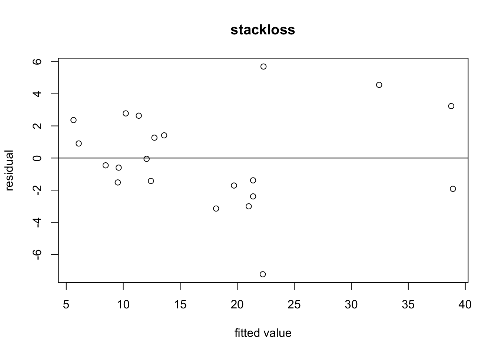

Section 9 Diagnostic Plots
(The following video refers to an older version of this section.)
When we developed the theory for linear models, we used the following assumptions:
Linear relationship between inputs and outputs: \(y \approx x^\top \beta\)
Independence of errors: the \(\varepsilon_i = y_i - (X\beta)_i\) are independent of each other.
Normally distributed errors: \(\varepsilon_i \sim \mathcal{N}(0, \sigma^2)\) for all \(i\). In particular, the variance of the \(\varepsilon_i\) does not depend on \(i\).
Sometimes, plotting the data can reveal when these assumptions are violated. Here we discuss different plot types which can be used for this purpose.
9.1 Residual Plots
A plot of \(\hat\varepsilon_i\) against \(\hat y_i\) is often called a “residual plot”. If the modelling assuptions are correct, the errors will be independent and normally distributed with mean zero and constant variance. The fitted residuals are estimates of the errors, so they should approximately satisfy these two properties.
If the variance of the residuals seems to increase with \(\hat y\) then a transformation may be necessary. The presence of a curvilinear relationship in this plot suggests a non-linear relationship between inputs and outputs.
Example 9.1 To demonstrate the use of residual plots, we first produce such a plot for simulated data, where we know that the modelling assumptions are satisfied.
n <- 50
x <- seq(0, 10, length.out = n)
y <- 2 + 0.5 * x + rnorm(n)
m <- lm(y ~ x)
plot(fitted(m), resid(m),
xlab = "fitted value", ylab = "residual",
main = "modelling assumptions satisfied")
abline(h = 0)We can see that the residuals are clustered around zero as expected.
Example 9.2 Next we consider a residual plot where the modelling assumptions are known to be violated. Here we generate data using a quadratic dependency (instead of linear) of the output on the input:
n <- 50
x <- seq(0, 10, length.out = n)
y <- 2 + 0.5 * x^2 + rnorm(n)
m <- lm(y ~ x)
plot(fitted(m), resid(m),
xlab = "fitted value", ylab = "residual",
main = "modelling assumptions violated")
abline(h = 0)It is clear that the residuals are not centred around the horizontal zero line, but form a parabola instead.
The structure of the \(x\)-values can affect the visual appearance of this type of plot, even if the modelling assumptions are exactly satisfied. For example, if the \(x\)-values “thin out” towards the edges of the range, the “band” of residuals may appear narrower there, just because there are fewer chances for large residuals to occur near the edges.
The following example shows a residual plot for real data, where it is unknown whether or not the modelling assumptions are satisfied.
Example 9.3 A residual plot for the stackloss dataset can be produced as follows:
m <- lm(stack.loss ~ ., data = stackloss)
plot(fitted(m), resid(m),
xlab = "fitted value", ylab = "residual",
main = "stackloss")
abline(h = 0)
We can see that the residuals are clustered around zero as expected. Since there are no obvious patterns, the plot does not indicate any problems with model fit.
9.2 Q-Q Plots
A Q-Q plot of the residuals
can be used to assess whether the residuals are normally distributed. These
plots plot quantiles of the data against quantiles of a normal distribution.
If the residual are normally distributed, the points in a Q-Q plot will
approximately lie on a straight line. The R command to produce Q-Q plots for
the normal distribution is qqnorm().
Example 9.4 We first show an example with simulated data, where the modelling assumptions are known to be satisfied.
n <- 50
x <- seq(0, 10, length.out = n)
y <- 2 + 0.5 * x + rnorm(n)
m <- lm(y ~ x)
qqnorm(resid(m), main = "modelling assumptions satisfied")As expected, the points lie approximately on a straight line.
Example 9.5 Next we consider an example where the errors are exponentially instead of normally distributed.
n <- 50
x <- seq(0, 10, length.out = n)
eps <- rexp(n) - 1 # we subtract 1, so that the errors still have mean zero
y <- 2 + x + eps
m <- lm(y ~ x)
qqnorm(resid(m), main = "modelling assumptions violated")Now the points of the Q-Q plot lie on a curved line, indicating that the residuals are not normally distributed.
Example 9.6 Next we consider an example where the errors are exponentially instead of normally distributed.
The points in this Q-Q plot lie more or less on a straight line, so it seems a reasonable to assume that the errors were normally distributed.
9.3 Other Plot Types
Sometimes, different plot types are also used.
A scatter plot of the response \(y\) against each of the explanatory variables \(x_j\) for \(j \in \{1, \ldots, p\}\). Great care is needed when interpreting such plots: even if the full model is linear, the dependency of the output on individual inputs may appear non-linear. This can be caused by non-linear structures in the input data (which don’t violate the modelling assumptions).
A scatter plot of \(\hat\varepsilon\) against each of the explanatory variables \(x_j\) for \(j \in \{1, \ldots, p\}\). Again, care is needed when trying to interpret such plots.
A plot of \(x_j\) against \(x_k\) for \(j\neq k\) can also be useful. For example, if two or more regressors are highly correlated, we say that multicollinearity is present. When this occurs, the least squares estimate \(\hat\beta\) becomes numerically unstable. (We will learn more about this effect in chapter 15.)
Data are often collected in time order. Even if time is not an explanatory variable, a plot of \(y\) against time can be of interest. It can reveal serial correlation in the data. Similarly, plotting the residuals against time.
Example 9.7 We can plot stack.loss against Water.Temp for the stackloss dataset:

Clearly the stack loss increases with water temperature, but the relationship seems not to be linear. It may make sense to include the square of the water temperature as an additional input variable in the model.
Summary
- Diagnostic plots can help to discover problems with model fit.
- The most important diagnostic plots are residual plots and Q-Q plots.